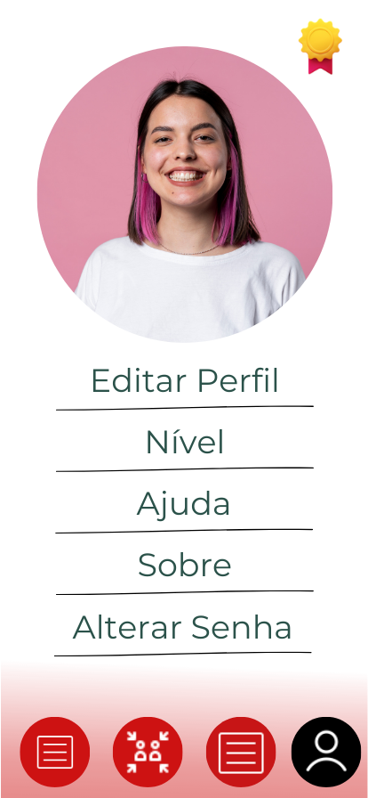
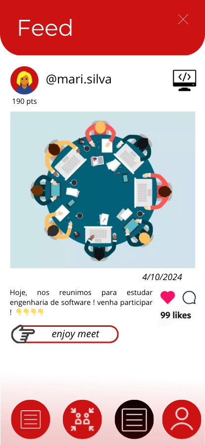

Funcionalidades

Seu App sua cara!

Saiba o que está rolando com o Feed
Encontre eventos e se reuna com a galera.
Seu App sua cara!
Saiba o que está rolando com o Feed
Encontre eventos e se reuna com a galera.
Videochamadas de alta qualidade.
Fácil integração com o calendário.
Chats e notificações em tempo real.
Através de grupos, os usuários podem trocar experiências e aprender uns com os outros,
fortalecendo sua rede de contatos acadêmicos e profissionais. Além disso, o Fatec Meets oferece recursos para que os
alunos possam participar de grupos, atividades e eventos que aprimoram suas competências, preparando-os para os
desafios do mercado de trabalho.
Além do foco no desenvolvimento pessoal e acadêmico, o Fatec Meets também promove uma variedade de eventos de entretenimento e
atividades extracurriculares. Os usuários podem criar e se inscrever em eventos de música, esportes e culturais, criando
uma comunidade vibrante e engajada. O aplicativo serve como um hub para eventos acadêmicos, oferecendo informações
sobre palestras, grupos de estudo, grupos de leitura e jogos, além de proporcionar um espaço para os alunos organizarem suas próprias
iniciativas. Com o Fatec Meets, a experiência universitária se torna mais rica e dinâmica, reunindo aprendizado e
diversão em um só lugar.
Disponível para Android e iOS